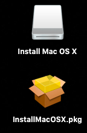
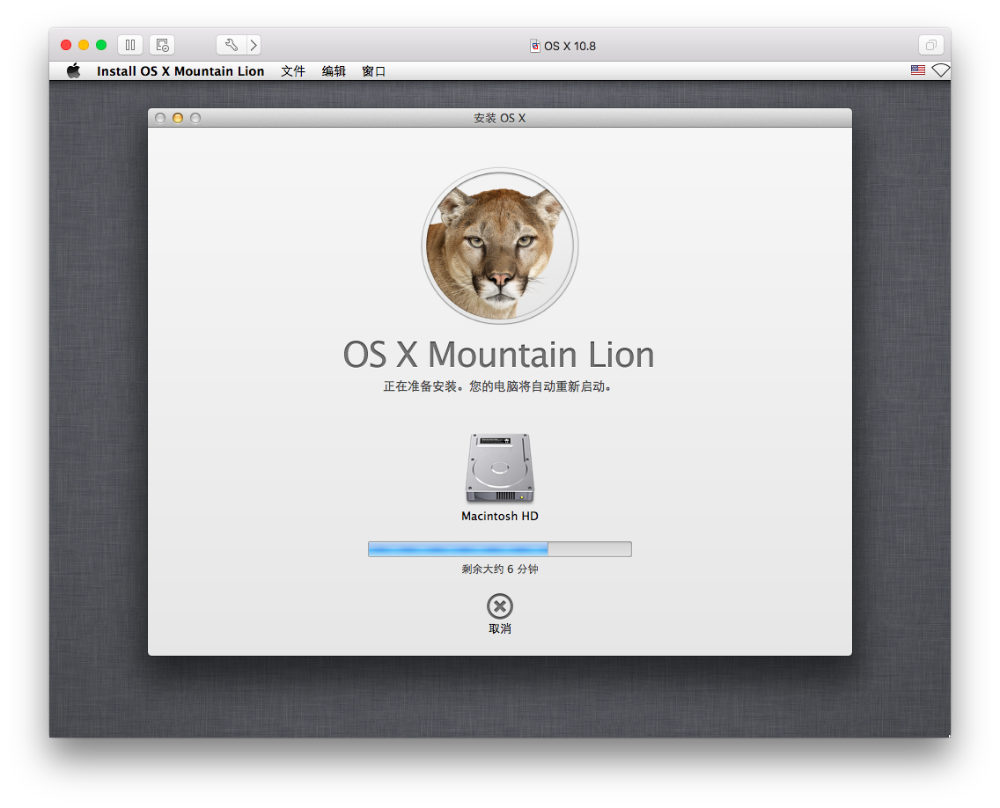

2025.07.03
createinstallmedia 命令
创建 OS X 10.11 以后操作系统的安装盘，
但在这之前的系统并不适用。这个教程教你如何创建它们的安装映像。获取映像
在 Apple 支持上 下载映像，你应该会得到一个 .dmg 文件。打开它后把里面的软件包 (.pkg) 文件拖出来。

图一：下载的映像，以及拖出来的 .pkg 文件
解包 .pkg 文件
打开「终端」（应该在「其他」文件夹内），运行以下命令：
xar -xf [PKG文件路径]（注：把文件拖到终端里可以获得它的路径）
之后，你会在用户文件夹里得到一个名字一模一样的 .pkg 文件，但是此时，我们可以右键点击 「显示包内容」，再把内部的 InstallESD.dmg 拖出来。这便是 OS X 的安装镜像了。 你可以直接使用它，或者用「磁盘工具」把它写入到 U 盘里面。

图二：在 VMware Fusion 中使用解包出来的映像安装 OS X Mountain Lion
（完）

Site Total Visitors: NowLoading...